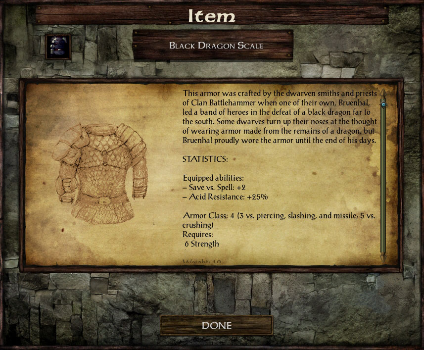

Description Icons for IWD Items (DI3)
A Gibberlings Three Mod
Author: Parys
Coding: CamDawg
On the web: Home page, discussion forum, image gallery, and Discord
Version Beta 1
Languages: English
Platforms: Windows, macOS, Linux
GitHub: Gibberlings3/iwd_description_icons
Description Icons for IWD Items (DI3) modifies the IWDEE UI to display description images for items, in the same fashion that the BG series does. Artwork for existing items was created by Parys, with a handful of images scavenged from BG/BG2 for identical items across the games.
This mod is exclusively for IWDEE. In terms of install order, DI3 should go after other mods that add items unless otherwise noted here or in the other mod's readme.
DI3 will work with Tweaks Anthology's Unique Icons component. For Tweaks Anthology version 18 or earlier, DI3 needs to be installed after it. For Anthology v19 or newer, you can install in either order, with Anthology going after being the preferred order.
If another UI mod has already enabled description images, this mod will try to detect these changes and leave them alone. If not detected it will try to enable description images by modifying the UI. As such it may conflict with UI mods.
If you should encounter any bugs, please report them to the authors at the Miscellaneous Released Mods forum. In addition, DI3 is available on GitHub, so fixes and changes can be submitted by the community.
At present there are no known issues.
First time installing a mod? Check out G3's comprehensive tutorial: A New Player's Guide to Installing and Playing Mods.
Enhanced Editions Note
The Enhanced Editions are actively supported games. Please note that every patch update will wipe your current mod setup! If in the middle of a modded game you might want to delay the patch update (if possible) as even after reinstalling the mods, you might not be able to continue with your old savegames. Alternatively, copy the whole game's folder into a new one that can be modded and will stay untouched by game patches. It is important that you install the mod to the language version you are playing the game in. Otherwise, the dialogues of the mod will not show but give error messages.
Windows
Description Icons for IWD Items for Windows is distributed as a self-extracting archive and includes a WeiDU installer. To install, simply double-click the archive and follow the instructions on screen.
Alternatively, the files can be extracted into your game directory using 7zip or WinRAR. When properly extracted, your game directory will contain setup-cd_iwd_desc.exe and the folder cd_iwd_desc. To install, double-click setup-cd_iwd_desc.exe and follow the instructions on screen.
You can run setup-cd_iwd_desc.exe in your game folder to reinstall, uninstall or otherwise change components.
macOS
Description Icons for IWD Items for macOS is distributed as a compressed tarball and includes a WeiDU installer.
First, extract the files from the tarball into your game directory. When properly extracted, your game directory will contain setup-cd_iwd_desc, setup-cd_iwd_desc.command, and the folder cd_iwd_desc. To install, double-click setup-cd_iwd_desc.command and follow the instructions on screen.
You can run setup-cd_iwd_desc.command in your game folder to reinstall, uninstall or otherwise change components.
Linux
Description Icons for IWD Items for Linux is distributed as a compressed tarball and does not include a WeiDU installer. Linux users will need to do a one-time install of WeiDU (and a few other adjustments) as described in this great writeup.
To install, run 'WeInstall cd_iwd_desc in your game folder.
Note for Complete Uninstallation
In addition to the methods above for removing individual components, you can completely uninstall the mod using setup-cd_iwd_desc --uninstall at the command line to remove all components without wading through prompts.
DI3 has a single component that changes the UI and assigns description images to the item screen (additional previews are available in the image gallery):

Parys came up with the idea and provided the wonderful artwork in the mod. CamDawg handled the technical bits. For issues, suggestions, praise, or other feedback you can contact either of the linked contributors. You can find out more about DI3 by visiting the DI3 forum or the project page. Visit the Gibberlings Three Forums for information on this and any other Gibberlings Three mods on which we may be working.
DI3 started when Parys approached CamDawg with an idea for a new Tweaks Anthology component. After some discussion they decided it would be better as a standalone mod, and Parys started slaving away at the massive amount of new artwork needed. CamDawg made the installer and did some compatibility work on Anthology.
Tools Used in Creation
- WeiDU by Wes Weimer, the bigg, and Wisp
- Near Infinity by Jon Olav Hauglid, FredSRichardson, and argent77
- Notepad++, by the Notepad++ team
- WeiDU Notepad++ Highlighters by cmorgan, updated by argent77
- ConTEXT Text Editor by Eden Kirin
- WeiDU ConTEXT Highlighters by Idobek, updated by cmorgan
- IESDP maintained by igi and lynx
The modding community for the Infinity Engine has been going strong for more than 20 years now, and is the culmination of thousands of unpaid modding hours by fellow fans of the game. Modders produce their best work and players get the best, well-supported mods when we all work together.
There are two big ways to upset this harmony. One is to claim someone else's work as your own. The second is to host and redistribute a mod without permission from the author(s).
Be kind to your fellow players and modders. Don't do either.